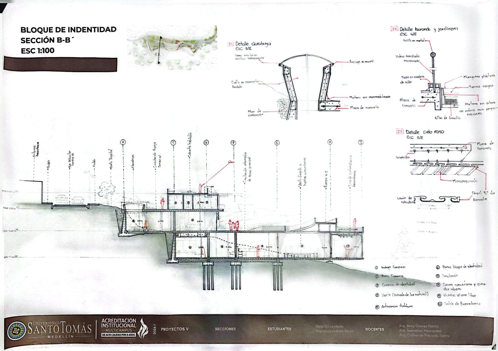

Entender Carpinelo
...Implica reconocer que su complejidad física no es sinónimo de carencia, sino de una configuración urbana alternativa con valores propios. Si bien el terreno es retador, esta misma condición ha fomentado una estructura social sólida y un sentido de pertenencia envidiable, donde la comunidad ha sabido habitar la pendiente.

Esquemas
 // 02. Incidencia solar y ventilación pasiva
// 02. Incidencia solar y ventilación pasiva
 // 03. Accesos peatonales y conexión urbana
// 03. Accesos peatonales y conexión urbana
 // 04. Flujos públicos, privados y de servicio
// 04. Flujos públicos, privados y de servicio
 // 05. Zonificación espacial general
// 05. Zonificación espacial general
Plantas Arquitectónicas
 // 06. Planta de Cubierta
// 06. Planta de Cubierta
 // 07. Planta de Primer Contacto
// 07. Planta de Primer Contacto
 // 08. Planta Acceso
// 08. Planta Acceso
 // 09. Bloque Aprendizaje
// 09. Bloque Aprendizaje
 // 10. Planta Socialización
// 10. Planta Socialización
Secciones
 // 11. Corte longitudinal del terreno
// 11. Corte longitudinal del terreno

// 12. Corte transversal bloque educativo // 13. Corte por el eje de espacio público
// 13. Corte por el eje de espacio público
Imaginarios
Espacio para Render Exterior
// 14. Perspectiva e integración paisajística
Espacio para Render Interior
// 15. Vista de la luz cenital sobre las aulas